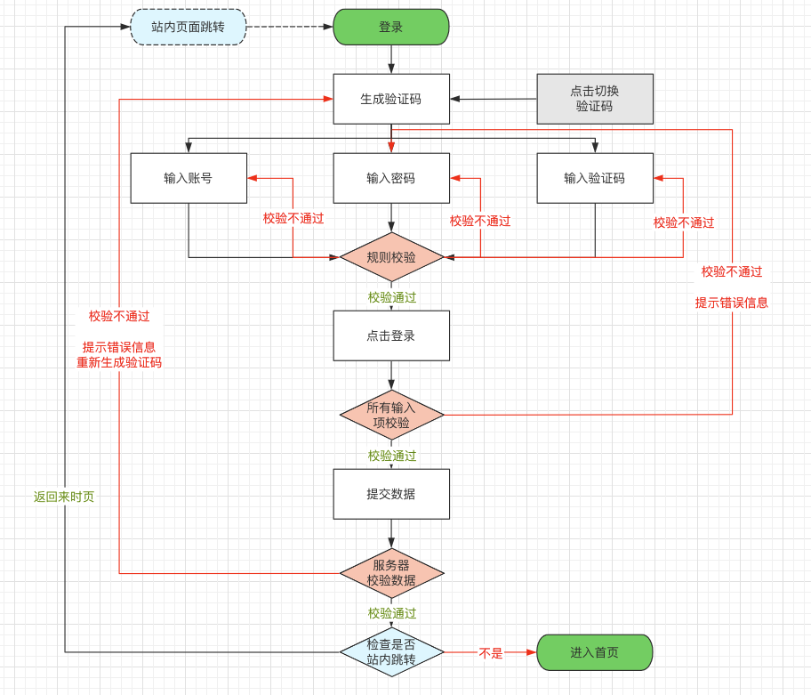

平安蜀黍的前端教程 > 实战教学 > 实现一个登录页
一般来说，我们需要访问某个网站时都需要登录，以方便系统记录你的个人信息。目前常见的登录方式有以下几种：
- 账号/密码登录
- 手机号/短信登录
- 第三方账号登录
因为手上资源有限，我们在这里暂时只实现一个账号密码登录，后面的两种等什么时候有条件了再实现吧
页面原型
账号/密码登录交互流程

创建页面
首先在我们在上周的创建 vite 项目里 pages 目录下创建 Login.js 文件，然后编辑这个文件
import React, { Component } from 'react';
// 为了减少麻烦，我们在业务中要尽量使用已有的UI库而不是自己去写
// Form组件
import { Form, Input, Button, Checkbox } from 'antd';
import './login.less';
export default class Login extends Component {
render() {
return (
// 所有的页面容器都需要docwrap这个样式名，便于设定一些整站的的页面样式
// 每个页面都需要一个自己的样式名，便于设定自己私有的页面样式且用于区分样式作用域
<div className="docwrap login">
<div className="container">
{/* 所有的样式名不应该包含大写，如果是多个单词线成，应使用“-”号来连接，不要用大写，也不要用下划线 */}
<div className="form-wrap">
{/* Form是由阿里推出的适用于react的第三方UI库ant design中的一个组件，它对html的form表单进行了比较全面的功能和样式封装，让我们可以在构建表单时更加容易 */}
<Form
labelCol={{ span: 7 }}
wrapperCol={{ span: 16 }}
{/*禁用自动完成*/}
autoComplete="off"
>
{/* form组件中所有元素都需要使用form.item包起来 */}
<Form.Item
name="account"
label="账号"
rules={[{ required: true, message: '请输入账号' }]}
hasFeedback={false}
>
<Input size="large" placeholder="用户名" />
</Form.Item>
<Form.Item
name="pwd"
label="密码"
rules={[{ required: true, message: '请输入密码' }]}
hasFeedback={false}
>
<Input.Password
// 禁用自动填充
autoComplete="new-password"
size="large"
placeholder="登录密码"
/>
</Form.Item>
<Form.Item
name="imgcode"
label="验证码"
rules={[{ required: true, message: '请输入验证码!' }]}
>
<div className="captcha">
<Input placeholder="验证码" size="large" />
<img
src="http://shop.fenotes.com/adminapi/captcha_pro"
alt="pictrue"
/>
</div>
</Form.Item>
<Form.Item>
<Button type="primary" htmlType="submit" block>
登录
</Button>
</Form.Item>
<Form.Item name="remember" valuePropName="checked">
<Checkbox>记住我</Checkbox>
</Form.Item>
</Form>
</div>
</div>
</div>
);
}
}
样式代码
// less最常用的
.docwrap {
// 定义变量（这里只是为了演示功能）
.size13 {
font-size: 13px;
}
// 定义方法
// 可以指定默认参数
.background(@color, @size, @repeat:no-repeat) {
background-color: @color;
background-size: @size;
background-repeat: @repeat;
}
// &号在这里表示并且，意思就是某个元素既有docwrap这个样式名也有login这个样式名
// <div class="docwrap login" />
&.login {
width: 100%;
height: 100%;
display: flex;
align-items: center;
justify-content: center;
// 调用方法并传参
.background(#ccc, cover);
transition: all;
.container {
width: 1024px;
min-width: 424px;
padding-left: 600px;
// 调用方法
.background(#f60, contain, no-repeat);
background-position: left center;
border-radius: 10px;
overflow: hidden;
}
.form-wrap {
background: #f5f5f5;
form {
padding: 22px 22px 16px;
.ant-form-item {
justify-content: center;
}
.ant-input {
// 读取变量
.size13;
}
// 占位文字的大小
.ant-input:placeholder-shown {
// 读取变量
.size13;
}
}
.captcha {
display: flex;
img {
height: 40px;
// 1px的透明边框可以让图片与input结合部看起来更平滑
border: transparent 1px solid;
}
}
}
// 当可显示区域宽度小于1024时怎么改变
@media (max-width: 1024px) {
.container {
width: 424px !important;
padding-left: 0 !important;
background-image: none !important;
}
}
}
}